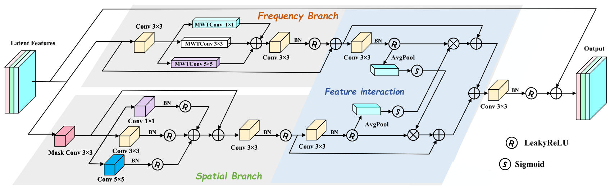
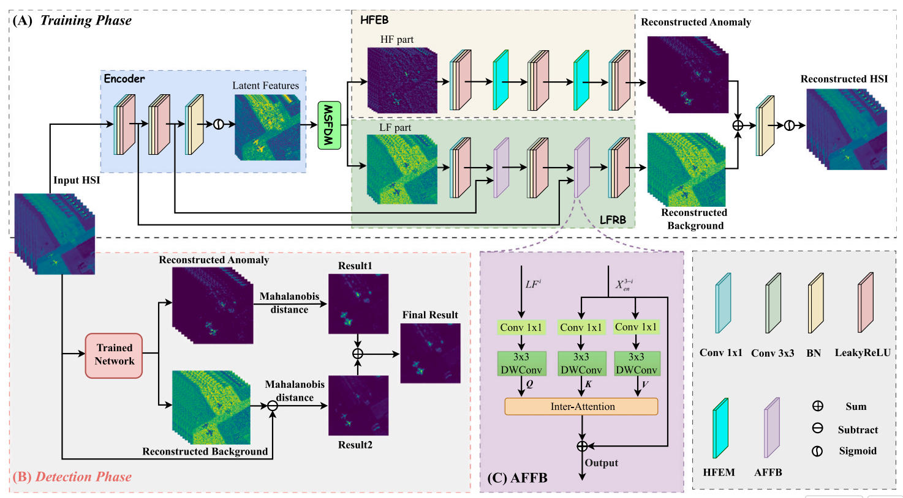
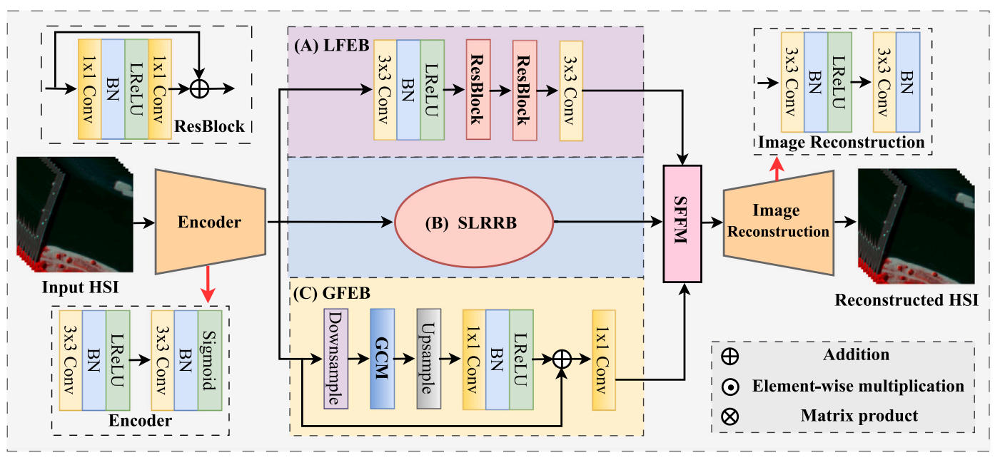
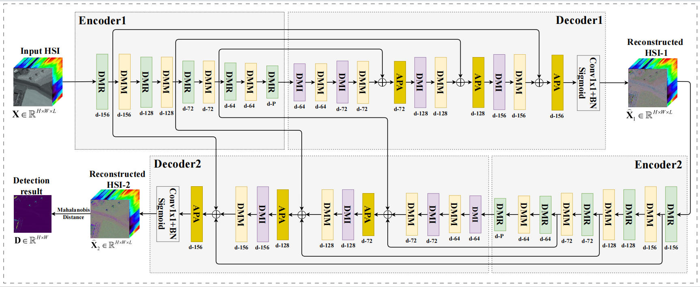

Zhe Zhao
My name is Zhe Zhao. I received my Bachelor's and Master's degrees from Xi'an University of Technology in 2019 and 2022, respectively, and I began my doctoral studies at Xidian University in 2023. My primary research interests lie in infrared and hyperspectral image processing, as well as anomaly detection. I have authored or co-authored over ten papers in leading journals, including PR, JAG, IPM, and IEEE JSTARS. In addition, I served as a reviewer for journals like IEEE TCSVT, IEEE TPAMA, JAG, PR, and IPM. I was awarded the National Scholarship for both master's and doctoral Students in 2021 and 2025, respectively.

Selected Publications



